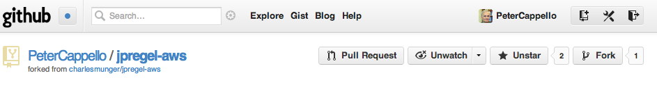
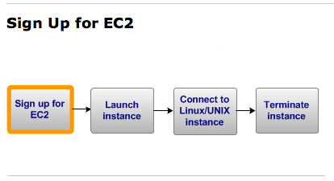

A tutorial introduction
Our deployment strategy entails an Initial set up: launching an AWS micro-instance as a client: It will send the jpregel Master jobs to perform. Once launched, you will stop the client when you are finished with a jpregel job. You never terminate the client instance. Instead, when you want to run another job, perhaps many days later, you begin by starting the client instance. The sequence of steps to run a job from your client is much shorter than the sequence to launch the client instance. We do endeavor to keep both of these instruction sequences as short as possible.
The initial set up of your AWS deployment environment consists of the following steps:
We now explain how to perform these steps.
If you do not have a GitHub account, please create one. Rather than repeat the explanation here, please see the GitHub explanation for creating a free account.
Using your web browser, go to https://github.com/PeterCappello/jpregel-aws. Click the Fork button in the upper right part of the page. A screen fragment of the web page is given below.

You now have your own copy of the jpregel-aws repository.
Using your web browser, go to The latest AWS EC2 Getting Started Guide. You will see that getting started entails 4 steps.

Here, we are interested in the first 2 steps:
To sign up for EC2, create an AWS account:
Running a jpregel job first entails instantiating a Master machine and a set of Worker machines. To do this, you need a jpregel access key. Here is how to create a file with this key.
Now launch an instance that subsequently will serve as a jpregel-aws client.
At this point you have a running jpregel client. Stop it, but do not terminate it.
When you want to deploy a jpregel job on EC2, you will start this client instance. Stop it when you are done. If you terminate it, you must create another instance using the steps above.